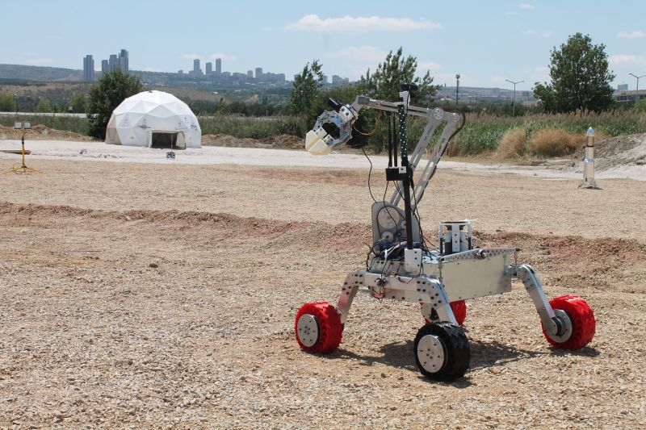
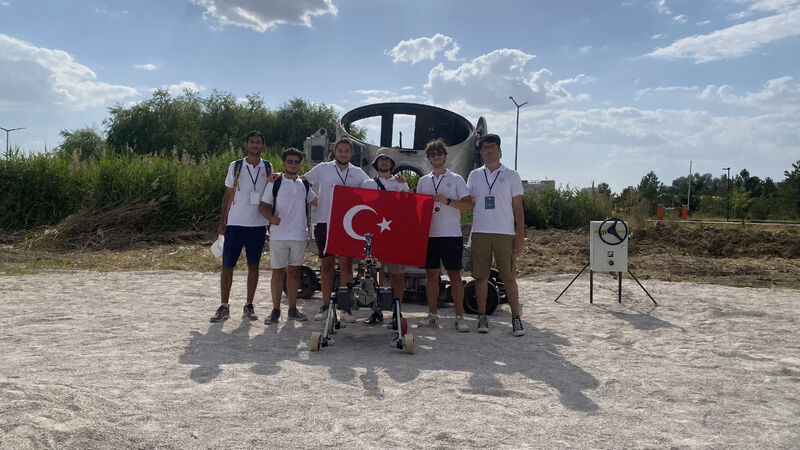
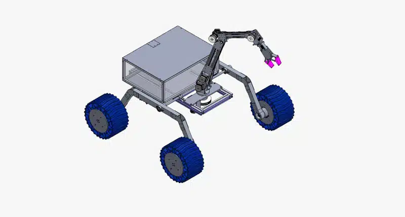
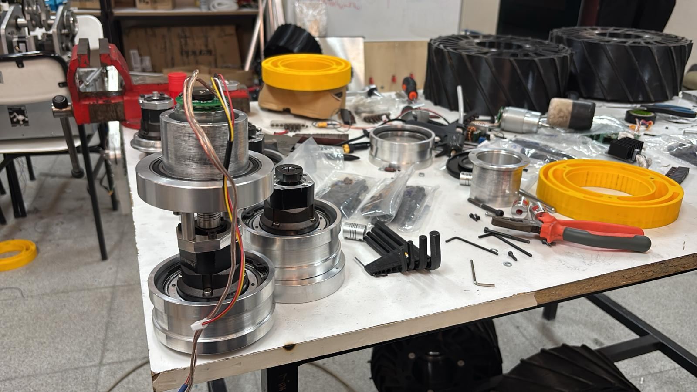
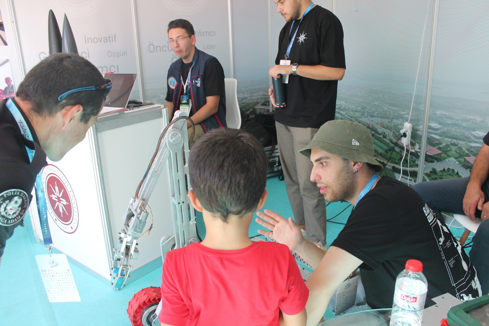
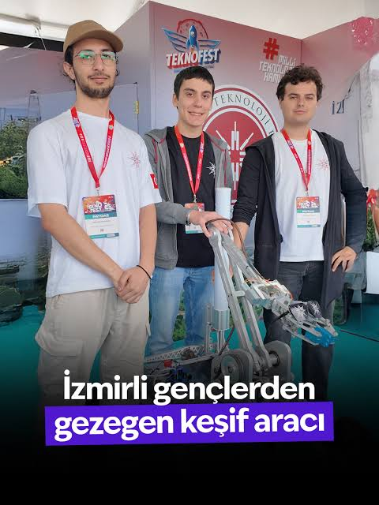

.png)
YARIŞMALAR
Başarılarımız & Görev Kayıtlarımız
ANATOLIAN ROVER CHALLENGE
Anatolian Rover Challenge (ARC), takımımızın uluslararası arenadaki ilk durağı oldu. 2023 yılında ilk prototipimiz Cengaver 1.0 ile sahaya çıkarak ilk bilimsel görevlerimizi tamamladık ve paha biçilmez saha tecrübesi kazandık. 2024'te ise Cengaver 2.0 "Barsoom" ile geri döndük ve önceki yıldan edindiğimiz derslerle final etabına kalan 20 takım arasında 7.'lik elde ettik.
SAHADAN KARELER



ARC BAŞVURU VİDEOMUZ
EUROPEAN ROVER CHALLENGE
ARC'de edindiğimiz saha tecrübesini artık global ölçeğe taşıyoruz. Polonya'da düzenlenen ve dünyanın en prestijli rover yarışmalarından biri olan European Rover Challenge (ERC), takımımızın yeni hedefi. Üçüncü roverımız TALOS'un mekanik ve elektronik tasarımını tamamlayarak üretime başladık; ülkemizi ve üniversitemizi Avrupa arenasında en iyi şekilde temsil etmek için çalışıyoruz.
HAZIRLIK SÜRECİNDEN KARELER



ERC BAŞVURU VİDEOMUZ
TEKNOFEST
Türkiye'nin en büyük havacılık, uzay ve teknoloji festivali TEKNOFEST, milli teknoloji hamlesinin kalbinde yer alıyor. Cengaver Rover olarak farklı disiplinlerden gelen ekiplerimizle TEKNOFEST kategorilerinde ülkemizin genç mühendislerine ilham vermeyi ve İYTE'yi en iyi şekilde temsil etmeyi hedefliyoruz. Takımımız bünyesinde yazılan 5 adet TÜBİTAK 2209-A projesinin kabulü, bu yolculuktaki en güçlü adımlarımızdan biri oldu.
TEKNOFEST KARELERİ

